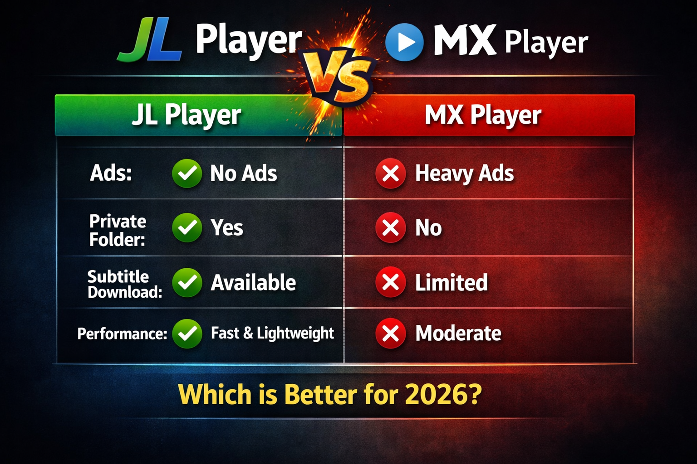

JL Player vs MX Player (2026)

If you're choosing between JL Player and MX Player, you're not alone. Both are popular Android video players, but they offer very different experiences.
In this comparison, we break down features, performance, and usability to help you decide which one is better in 2026.
JL Player Overview
JL Player is a modern Android video player designed for performance, privacy, and clean user experience.
- 🎥 All format support (MP4, MKV, AVI, FLV)
- 🔐 Private folder to hide videos
- 🌐 Subtitle download
- 📊 MediaInfo (advanced metadata)
- 📺 Chromecast support
- ⚡ Lightweight and fast
MX Player Overview
MX Player is one of the most widely used video players, but it has shifted towards streaming and ads.
- ✔ Good format support
- ❌ Ads during playback
- ❌ No private folder feature
- ❌ Limited advanced tools
- ⚠ Focus on online content
Feature Comparison
| Feature | JL Player | MX Player |
|---|---|---|
| Ads | Minimal / None | Heavy Ads |
| Private Folder | Yes | No |
| Subtitle Download | Yes | No |
| MediaInfo | Advanced | Basic |
| Performance | Fast | Moderate |
Final Verdict
While MX Player is still popular, it has become more focused on ads and streaming.
JL Player is the better choice in 2026 for users who want a clean, fast, and feature-rich video player without distractions.
Also read: MX Player Alternative | Best Video Player 2026